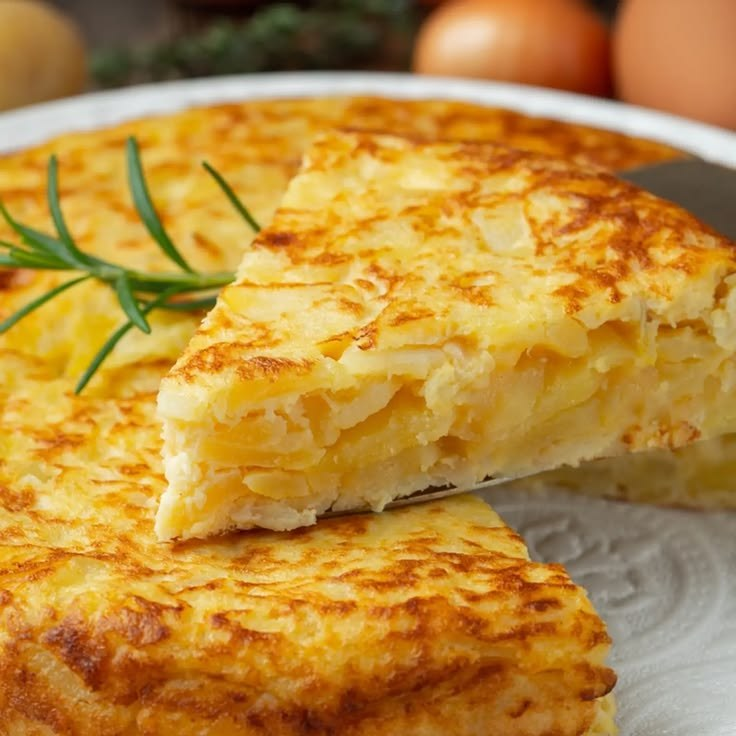

.png)

Cena
Tortilla española de papa
- Tiempo45 min
- Rinde4 porciones
- DificultadMedia-alta
Ingredientes
- 8 huevos
- 750 g de papa
- 200 g de cebolla
- Sal al gusto
- Aceite de oliva abundante
Preparación
- Pela la papa y córtala, junto con la cebolla, en trozos pequeños y finos, de tamaño parecido.
- Cocina la papa y la cebolla a fuego lento en abundante aceite: deben quedar blandas, sin dorarse.
- Bate los huevos a fondo hasta que hagan espuma; así la tortilla queda más esponjosa.
- Escurre bien la papa y la cebolla para quitar el exceso de aceite, mézclalas con el huevo sin aplastarlas, sala y deja reposar de 5 a 10 minutos.
- Cuaja la tortilla en una sartén a fuego medio-alto (en tandas si hace falta), sin moverla mientras cuaja. Si hay mucho huevo, baja el fuego.
- Dale la vuelta con ayuda de un plato o con un movimiento de muñeca y dora el otro lado.
Consejos
- Pocha, no frías: la papa y la cebolla no deben dorarse.
- No las conviertas en puré: el almidón haría la mezcla pastosa.
- Si queda líquida por dentro, 2 minutos en el microondas la terminan de cuajar.
- Elige una papa adecuada para freír y córtala pequeña.
Receta adaptada de Directo al Paladar. Texto reescrito y cantidades tomadas de la fuente.